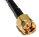
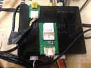
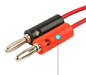
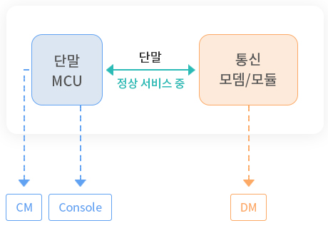

| 구분 | 세부 내용 (*문서기안 필수) |
|---|---|
| 입고문서 |
|
|
Home
Support
검증 지원
검증 가이드
검증 지원
4. 단말 검증 요구사항
4.1 입고 문서
4.2 SW 요구사항
- 1) 단말 개발 시 kt 규격 및 IoT 개발 및 검증 가이드에 준하여 제작되어야 함.
4.3 단말 시료 준비
*전체 입고 단말의 경우 DM Cable과 전원 Cable 필수
- 1) 신규 모듈/외장형모뎀, 원칩 단말 및 미인증 모듈/외장형모뎀 및 펌웨어 사용 단말
시료 수량 Division 간소화 개통USIM 기타 일산(13 대) H/W 1(방사) O Battery 및 Charger(#1) H/W 2(방사) O Battery 및 Charger(#1) H/W 3(전도) O RF Cable 및 안테나 소켓(#2) UICC 외장USIM Socket(#3) OTA 외장USIM Socket(#3) SMS FTP O SBSM O LTE MMS VoLTE 1 VoLTE 2 O VoLTE 3 O 개봉(4 대) 기능검증 1 O O RF Cable 및 안테나 소켓(#2), 외장USIM Socket(#3) 기능검증 2 O O 기능검증 3 O O Aging O O *e-SIM 단말의 경우 USIM으로 준비(HW1, HW2, HW3, UICC, OTA, SMS, LTE, MMS, VoLTE1, VoLTE2, 기능검증1 시료)
- 2) kt 인증 모듈/외장형 모뎀 펌웨어 사용 단말
시료 수량 Division 개통USIM 기타 일산(3 대) H/W 1(방사) Battery 및 Charger(#1) H/W 2(방사) Battery 및 Charger(#1) H/W 3(전도) RF Cable 및 안테나 소켓(#2) 개봉(4 대) 기능검증 1 O RF Cable 및 안테나 소켓(#2), 외장USIM Socket(#3) 기능검증 2 O 기능검증 3 O Aging O *e-SIM 단말의 경우 USIM으로 준비(HW1, HW2, HW3, 기능검증1 시료)
- 3) 검증 종료된 단말 반출
- - 입고 단말 중 QAT 3대, 기능검증 1대를 제외하고는 액세서리 포함하여 모두 반출
구분 Sample Sample Battery 및 Charger(#1) 상시 전원 단말의 경우 준비 단말이 2시간 이상 동작 가능한 용량의 배터리 및 충전기 RF Cable(#2) - 1) 단말 안테나 소켓과 검증장비 연결 가능한 케이블 준비 SMA(Male) 타입으로 2Set 준비
- 2) 길이는 15cm~20cm 정도, Loss값 표기
외장 USIM Socket(#3) 전원 인가된 상태에서 USIM 탈/부착 가능 하도록 소켓을 외부로 노출 e-SIM 사용 Test Sim 정보로 셋팅 하거나 외장 USIM 소켓 장착 eSIM 정보 제공 - 1) kt 요청 후 정보 취득 필요
- 2) SIM OPc , Ki 값 확인 후 제공 필요
FTP/Aging 단말 테스트 진행을 위해 DUN 또는 RNDIS 등의 형태로 데이터 사용이 가능해야 함 kt USIM Check 해제 kt SIM 만 인식 가능 할 경우 장비 SIM 사용 불가 - 1) kt SIM 만 인식 가능하도록 프로그래밍 되어있는 경우 해제 명령어 필요
- 2) Hard Cording 되어있는 경우 펌웨어 수정 후 입고
바나나 플러그 - 1) (배터리 사용 단말) 파워서플라이 연결을 위한 바나나 플러그 케이블 제공 필요
- 2) 시료 전원 부 OUT 테스트 파워서플라이 IN
Dummy Battery 소모전류 측정용 더미 배터리 1set 준비 일산 입고 단말 - 1) 상용 모드에서 테스트 장비 USIM 인식 가능
- 2) 테스트 장비에서 단말기로 ping 시도 시 응답 가능
- 3) 자동 OFF 및 Reset 기능이 있을 경우 해당기능 해제가 가능
4.4 단말 방사 성능 기준
*방사 성능 기준은 다음과 같으며, 반드시 해당 기준을 만족하여야 한다.
| 네트워크 | TRP(Total Radiated Power) | ||
|---|---|---|---|
| B1 | B3 | B8 | |
| LTE/LTE-M | +18dBm↑ | +20dBm↑ | +18dBm↑ |
| WCDMA | +21dBm↑ | - | - |
| NB-IoT(In/ Guard) | - | +18dBm↑ | - |
| eMTC | - | +20dBm↑ | - |
| 네트워크 | TIS(Total Isotropic Sensitivity) | ||
|---|---|---|---|
| B1 | B3 | B8 | |
| LTE/LTE-M | -93dBm↓ | -95dBm↓ | -93dBm↓ |
| WCDMA | -108dBm | - | - |
| NB-IoT(In/ Guard) | - | -105dBm↓ | - |
| eMTC | - | -102dBm↓ | - |
4.5 HW 구성
4.5.1 외부 인터페이스
- 1) 통신 모듈 제어, 단말 디버깅, 펌웨어 업그레이드를 위해 PC 와 연결 가능한 인터페이스 제공
- ① CM Port 제공(UART 또는 USB) : 단말 제어(AT CMD)가 가능한 CM툴을 GUI 형태로 제공
- ② DM Port 제공(RS-232C, UART, USB 또는 LAN 포트) : kt Air Message 분석 툴인 KDM 을 위한 포트 제공, KDM 연동 불가능한 경우 별도 분석 툴 제공
- 2) DM/CM 필수 요구 사항
- ① DM/CM/Console 등 외부에 노출된 Port 접근 시 권한 설정 기능 구현
- 상용 단말에서 보안상 DM Port를 비활성화(Disable) 상태로 설정 되어야 함
- DM Port 활성화(Enable) 시 접근권한 (예 : OTP 방식 등)을 설정 하여야 함
- DM Port 활성화 또는 비활성화 설정 시 단말이 리부팅 되지 않고 기능이 적용되어야 함
- CM/Console 등 단말 설정을 하기 위한 Port 접근 시 접근권한 (예 : OTP 방식 등)을 설정해야 함
- 기능검증 진행 시 DM Port 활성화가 가능하여야 하므로, 활성화 방법은 별도 전달
- ① DM/CM/Console 등 외부에 노출된 Port 접근 시 권한 설정 기능 구현
- 3) DM/CM 논리적 구성(예)

CM 구현 항목 QAT 기능검증 포트 스캔/연결 O O 리셋/초기화 O O AT Command 입력/모니터링 O O 가입자 상태 확인 (USIM 미개통/미삽입, 발신정지 등) O O 디버그 스크린 (무선환경 및 네트워크 상태) O O 단말 정보 (제조사/모델/버전/IMEI 등) 조회/설정 O O ICCID/IMSI/MSISDN 정보 조회 O O APN/Qos 정보 조회/설정 O O 네트워크 (BAND/Catetory/채널 등) 모드 설정 O O 데이터 연결 (전화접속) O O 음성/SMS (수발신함) O O 번호등록 (OTA) O O USIM PIN Lock (PUK) O O Security 설정 O X SVC/SMS Domain O X SMSC 조회/설정 O X GCF 조회/설정 O X PLMNwACT 추가/변경 O X OPLMN/HPMLNwACT/FPLMN 조회 O X SMSP 설정 O X USIM service Table/Enabled Service Table 조회 O X - 4) 입고 단말 검토 시 1대 이상 개통된 USIM(012번호) 준비, DM에서 PPP Frame Message 확인이 가능 하여야 함 (RX, TX 포함)
4.5.2 NFC 미지원 단말
- 1) NFC 미지원 단말기는 UICC C6 PIN을 GND 처리(e-SIM 제외)
Contacts Assignment C1 Vcc C2 Reset C3 Clock C4 Reserved C4 Reserved C5 GND C6 SWP C7 I/O C8 Reserved *NFC를 미지원하는 단말기는 C6 PIN(SWP)을 GND 처리해야 한다.
4.6 품질관련 주요 기능 구현
하기의 필수로 구현되어야 할 항목은 상용 단말에도 동일하게 적용되어야 함
4.6.1 단말 기능| 구분 | 기능항목 |
|---|---|
| 상용화 이후 원격 지원 기능 |
|
| 네트웍 망영향성 검토 및 부하 경감 |
|
| 품질관련 주요 기능 |
|
| 인증서 확인 |
|
| 모뎀/모듈 기능 확인 |
|
| 단말 보안기능 | 리눅스 단말 보안 기능 구현은 kt고객지원사이트 (https://supportdms.kt.com/) 보안 검증 시나리오 참조(kt 보안팀) |
| 장비 연동 확인 |
|